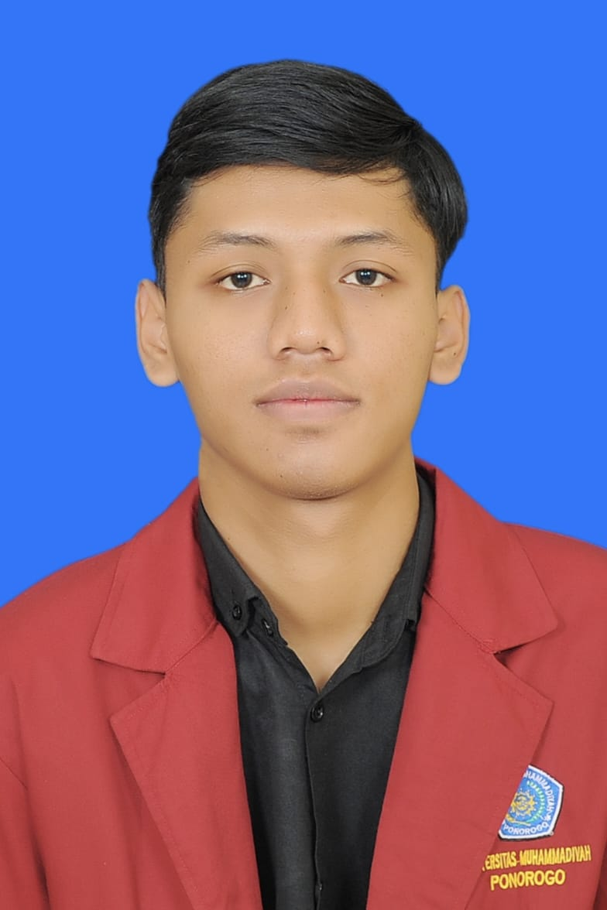

GAZHA ABIYYU AS'AD
No.tlpn: 0881xxxxxx3
Email: gaxxxxx@gmail.com
Alamat: Ponorogo

PROFIL
Mahasiswa Teknik Informatika dengan latar belakang pengetahuan di bidang Teknik Komputer dan Jaringan (TKJ). Memiliki minat dalam pemrograman, pengembangan web, jaringan komputer, dan teknologi informasi. Pribadi yang disiplin, bertanggung jawab, mampu bekerja sama dalam tim, serta memiliki motivasi tinggi untuk terus belajar dan mengembangkan keterampilan di bidang IT.
PENGALAMAN
Organisasi dan Kegiatan
- Menjadi kader Ikatan Mahasiswa Muhammadiyah (IMM).
- Mengikuti kepanitiaan IMM sebagai Humas.
- Menjadi anggota dan ketua Organisasi Siswa Intra Sekolah (OSIS).
- Melaksanakan PKL di servis komputer.
- Menjadi Panitia MASTAMARU 2026
PENDIDIKAN
Universitas Muhammadiyah Ponorogo
Sekarang
S1 Teknik Informatika
SMKN Sawoo
2022 - 2025
Teknik Komputer dan Jaringan (TKJ)
SMPN 2 Sambit
2019 - 2022
SDN Kemuning
2013 - 2019
KEAHLIAN
- Dasar pemrograman Python
- Dasar HTML dan CSS
- Instalasi dan konfigurasi jaringan
- Troubleshooting komputer
- Instalasi sistem operasi
- Bermain volly
- Kerja sama tim dan disiplin
BAHASA
- Bahasa Indonesia
- Bahasa Inggris (dasar)